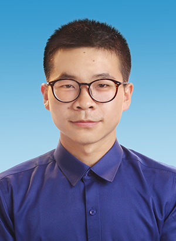

曲 涛 求职意向：图像算法工程师
| 教育经历 |
| 实习经历 |
|
项目介绍：面向户外运动市场用于夜间观测的手持式红外热成像望远镜，具有低功耗、高帧频等特点，同时还有连续数字变焦、智能跟踪识别、场景模式、电子防抖等特色功能。 1.跟踪/识别算法部署，部署YOLO识别模型及KCF目标跟踪算法，通过线程调度优化及动态NPU调频技术，将跟踪/识别耗时稳定在45ms/33ms以内（原50~100ms不稳定波动）； 2.自适应热点检测算法，引入降采样处理与搜索区域动态调整机制，解决某些场景下热点跳变问题； 3.红外伪彩处理与优化，采用NEON指令集加速及多线程处理优化，实现算法耗时从50ms到3ms内的数十倍性能提升； 4.视频流架构设计，采用单通道获取图像数据、多线程处理并设置优先级方式将实时帧率提升约60%（30→50fps）； 5.全部UI界面设计、全流程Linux应用程序及部分驱动程序开发。 项目介绍：小型非制冷红外机芯，具有低功耗、小型化等特点，具备多种测温方式及多种视频输出方式。 1.红外图像增强算法，负责图像锐化增强部分，采用双引导滤波的方式实现图像降噪和锐化，根据不同批次探测器特性采用分段线性函数动态调整锐化区间和强度并配合FPGA实现； 1.非标协议DVP摄像头驱动，针对探测器非标格式修改底层驱动，实现8bit/14bit原始数据传输，带宽从148.5MHz降低至27MHz并在硬件上减少8根数据线，极大降低了功耗与PCB布线复杂度，同时该方案也在望远镜上采用； 2.平台性能评估测试，针对机芯功能全开启后视频帧率下降问题，从CPU频率，内存频率、带宽、容量等方面采用性能分析工具perf、RK内存测试工具进行性能评估测试，并根据测试结果给出硬件改版设计参考。 |
| 项目经历 |
|
项目介绍：针对手持式红外热像设备图像抖动问题，开发实时电子稳像算法，降低画面抖动，提升图像观感。 1.运动估计采用分区方式进行特征点匹配并计算光流、结合IMU姿态角针对大幅度剧烈运动进行轨迹动态补偿； 2.轨迹平滑采用自适应卡尔曼滤波对运动轨迹进行平滑实现在线稳像，引入类sigmoid函数根据当前帧绝对位移及黑边比例调节卡尔曼滤波参数以适应主动位移与被动抖动； 3.性能优化通过分区多线程和单通道（Y）处理在1920x1080分辨率下可达30FPS+（Quad-core ARM Cortex-A53）。 项目介绍：调试星光级传感器及ISP，使图像曝光合理、色彩准确、画面通透且噪声尽量小，显示延时低。 1.调试星光级传感器ISP，完整调试SC2210、OS04A10两款Sensor，熟悉ISP Pipeline全流程； 2.调试完成的Sensor白平衡准确、曝光准确、暗光环境下(0.005Lux)噪声低，色彩准确、画面无畸变。 项目介绍：设计黑硅四象限探测器并针对该探测器设计信号放大电路用于引力波探测。 1.设计四象限探测器跨阻放大电路及脉冲信号展宽电路，将脉宽20ns、赋值10μA的电流信号放大至800ns、3V以上； 2.完成硬件电路的PCB绘制及后期电路测试且均达到设计参数要求。 |
| 专业技能 |
|
CET-4、NCRE-4（网络工程师），具备网站建设及网络信息化管理能力，熟练掌握C/C++、Matlab编程语言 熟练掌握基于Linux系统的嵌入式ARM驱动开发及摄像头应用开发，STC51、STM32单片机开发，了解V4L2架构 熟练掌握ISP Pipeline各模块原理，CMOS传感器的成像原理，图像处理基础算法及OpenCV库的应用 熟练掌握Altium Designer，Cadence等硬件设计软件，具备基础硬件电路设计、工业物联网开发经验 熟练掌握Photoshop、Illustrator，具备独立的UI设计、海报设计、摄影后期能力，爱好摄影、骑行、羽毛球 |
| 荣誉奖项 |
|
2022年第十六届"西门子杯"中国智能制造挑战赛全国总决赛特等奖(逻辑算法赛项，全国第4名、前0.3%) 2021年第十五届"西门子杯"中国智能制造挑战赛全国总决赛二等奖(工业自动化赛项) 2019年四川省优质教育促进会首届川蜀模范学子—科技创新突出成果奖(6万元奖学金，全省仅12人) 电子科技大学二等奖学金，成都理工大学荣誉学士、优秀毕业生、校一等奖学金1次、二等奖学金2次 |
| Last Update: 2025.04. @2025. All Rights Reserved. |